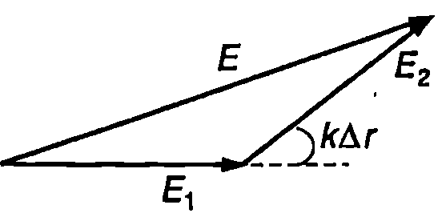

Вълновите свойства на светлината най-ясно се проявяват в явленията интерференция и дифракция. Тези явления са типични за всички вълнови процеси: както за механичните вълни, така и за електромагнитните вълни. Интерференция се нарича явлението, при което в резултат на едновременното разпространение на няколко вълни се получава постоянно във времето увеличаване на амплитудата на резултантната вълна в едни области и отслабване в други области.
За вълни по водна повърхност интерференция може да се наблюдава в демонстрационна водна вана, където източници на вълни са две еднакви остриета, свързани към общ вибратор. За някои точки от водната повърхност пристигането на гребен на вълната от единия източник винаги се съпровожда с едновременно пристигане на гребен на вълната от другия източник. Поради това двете вълни взаимно се усилват и в тази област се наблюдава интерференчен максимум (Фиг. \ref{fig:90.1}). В други области вълните взаимно се гасят, защото винаги едновременно пристигат гребен на едната вълна и дол на другата вълна: наблюдава се интерференчен минимум. Редуващите се максимуми и минимуми създават постоянна във времето интерференчна картина.
\begin{figure}[h!]
\centering
 \caption{Интерференция на вълни по водна повърхност.}
\label{fig:90.1}
\end{figure}
\caption{Интерференция на вълни по водна повърхност.}
\label{fig:90.1}
\end{figure}
Интерференция на светлината
Нека в пространството се разпространяват едновременно две светлинни вълни. Да означим с и интензитетите на електричните полета на двете вълни в дадена точка . Съгласно с принципа на суперпозицията интензитетът на резултантното поле в точка е . При механични вълни със сравнително ниски честоти е възможно непосредствено да се измери отклонението на частиците от дадена област от равновесното им положение, неговата амплитуда и зависимост от времето (вълна на отклонението). Може също да се измери зависимостта на звуковото налягане от времето (вълна на налягането). За електромагнитните вълни от видимата област интензитетът на електричното поле се изменя с честота от порядъка на Hz. Такова бързо изменение на полето не може да се регистрира непосредствено поради голямата инертност на приемниците на лъчение. Затова всички приемници, както и човешкото око, са чувствителни към енергетични величини, например към интензитета на светлината, които са осреднени за интервал от време (определен от инертността на приемника), който е много по-голям от периода на вълната . Интензитетът на светлината в точка е пропорционален на средната стойност на квадрата на интензитета на електричното поле (вж. 585):
Величината се нарича интерференчен член. Когато той е кула, пълният интензитет на светлината е сума от интензитетите на светлината от двата източника: . В този случай интерференция не се наблюдава. Ако интерференчният член е различен от нула, вълните се наричат кохерентни вълни. Източниците на такива вълни се наричат кохерентни източници. При наслагване на кохерентни вълни интерференчният член има различни стойности в различните области. Там, където той е положителен, интензитетът е по-голям, а където е отрицателен — по-малък. Възникват редуващи се светли и тъмни участъци, наречени интерференчни ивици.
Два точкови, идеално монохроматични източника на светлина с една и съща Честота , винаги са кохерентни. Всички реални източници на светлина обаче имат крайни размери и излъчват в определен честотен диапазон. Интерференция от такива източници се наблюдава само при изпълнение на определени условия, при които те могат да се смятат за кохерентни. На този въпрос ще се спрем по-подробно в следващия параграф.
Интерференция от два точкови монохроматични източника
Да разгледаме два еднакви точкови монохроматични източника, които излъчват синфазно. Върху отдалечен екран, разположен както е показано на Фиг. \ref{fig:90.2}, се наблюдава интерференчна картина. Когато разстоянието между източниците е много по-малко от разстоянието до екрана, казва се, че екранът (приемникът) се намира в далечното поле на източниците. Ще смятаме също, че , където е дължината на вълната на излъчването. Задачата за намиране на положението на интерференчните максимуми и минимуми, както и на пространственото разпределение на интензитета на светлината, съществено се опростява, когато се разглежда интерференция в далечното поле. В този случай се правят следните важни приближения:
- Амплитудите на електричните полета на двете сферични вълни съгласно с уравнение \eqref{eq:86.5} на стр. 183 намаляват обратнопропорционално на разстоянията и до точковите източници и . Тъй като в далечното поле всички точки от екрана са на приблизително равни разстояния от двата източника, т.е. , ще смятаме, че амплитудите на двете вълни са еднакви: .
\begin{figure}[h!]
\centering
 \caption{Двулъчева интерференция.}
\label{fig:90.2}
\end{figure}
\caption{Двулъчева интерференция.}
\label{fig:90.2}
\end{figure}
- Ще приемем, че във всяка точка от екрана вълните от двата източника се разпространяват в една и съща посока. Тогава електричните вектори и лежат в една и съща равнина, перпендикулярна на посоката на разпространение. Ако вълните не са поляризирани, всяка от тях може да се представи като суперпозиция от две линейно поляризирани във взаимно перпендикулярни направления вълни. Вълните от двата източника с еднакво направление на линейна поляризация интерферират помежду си и създават интерференчна картина, която съвпада пространствено с интерференчната картина на вълните, който са поляризирани в перпендикулярното направление. Затова е достатъчно да се ограничим с разглеждането на интерференцията на вълни с еднаква линейна поляризация, за които електричните вектори и трептят в едно и също фиксирано направление. Това дава възможност да се прилага методът на векторните диаграми за събиране на трептения с еднаква честота, които се извършват в едно и също направление.
Ще отбележим, че когато вълните от двата източника са линейно поляризирани във взаимно перпендикулярни направления, скаларното произведение винаги е нула и интерференция не се наблюдава. Отсъствието на интерференция в този случай е било експериментално установено от Френел и Араго през 1816 година и послужило като доказателство в подкрепа на предположението, че светлинните вълни са напречни.
Построяваме окръжност с радиус с център в точката на наблюдение (Фиг. \ref{fig:90.2}а). Тъй като , дъгата може с приближение да се приеме за отсечка, която едновременно е перпендикулярна на и . От правоъгълния триъгълник определяме разликата в геометричните пътища на двете вълни от източниците до точката на наблюдение (Фиг. \ref{fig:90.2}б):
Когато разликата в пътищата е равна на цяло число дължини на вълната , т.е.
в точка едновременно пристигат гребени (долове) на двете вълни и те взаимно се усилват: наблюдава се интерференчен максимум (конструктивна интерференция).
Условието за деструктивна интерференция (интерференчен минимум) е
Тогава гребен на едната вълна винаги пристига едновременно с дол от другата вълна и двете вълни взаимно се гасят.
Електричните полета на двете вълни в точка се изменят по хармоничните закони и , т.е. между двете електромагнигни трептения има фазова разлика
На векторна диаграма представяме двете трептения с вектори, които сключват помежду си ъгъл (Фиг. \ref{fig:90.3}). Резултантното електрично поле се задава с вектор, който е тяхна геометрична сума. Ще подчертаем, че в случая векторното представяне има формален характер. Както при механичните трептения, използваме векторните диаграми за събиране на физични величини, които се изменят по хармоничен закон с еднаква кръгова честота. В действителност, както беше отбелязано, векторите на интензитета и на електричните полета на двете вълни са насочени в едно и също направление, а техните проекции върху това направление се изменят по хармоничен закон с постоянна фазова разлика . Прилагаме косинусовата теорема за триъгълника от Фиг. \ref{fig:90.3}: \begin{figure}[h!] \centering  \caption{} \label{fig:90.3} \end{figure}
Амплитудите на електричните полета на двете вълни в далечното поле са равни, т.е. . Интензитетът на светлината е правопропорционален на квадрата на амплитудата на резултантното електрично поле . Следователно:
Величината изразява интензитета на светлината в точка , ако излъчваше само единият източник. От уравнение \eqref{eq:90.6} следва, че в точките от екрана, за които е изпълнено условието за интерференчен максимум \eqref{eq:90.3}, интензитетът на светлината е . Следователно в интерференчните максимуми се получава 4 пъти по-голям интензитет, отколкото би създал само един отделен източник, и 2 пъти по-голям интензитет от този, който би се получил от два еднакви, но некохерентни източника. За точките, в които е изпълнено условието за интерференчен минимум \eqref{eq:90.4}, интензитетът е нула: . При интерференция става преразпределение на интензитета на светлината: върху екрана се редуват светли и тъмни ивици. Интензитетът на светлината се изменя по периодичния закон \eqref{eq:90.6}, който е представен графично на Фиг. \ref{fig:90.2}а.
Пример 90.1
При интерференция от два точкови източника практически интерес обикновено представлява интерференчната картина само в централната част на екрана.
Когато е в сила неравенството , където е разстоянието от центъра на екрана до точката на наблюдение (Фиг. \ref{fig:90.2}а), определете:
а) положението на интерференчните максимуми и минимуми;
б) широчината на интерференчните ивици, т.е. разстоянието между два съседни интерференчни максимума (минимума). \end{psexample}
Решение
а) Когато , ъгълът е малък и използваме приближението (Фиг. \ref{fig:90.2}а). Заместваме в уравнения \eqref{eq:90.3} и \eqref{eq:90.4} и намираме условията за интерференчен максимум и минимум:
— максимум;
— минимум.
Координатите на максимума и минимума от -ти порядък са
б) Да означим с И координатите на интерференчните максимуми съответно от -ти и -ви порядък. Разстоянието между тях, т.е. широчината на интерференчната ивица, е
Следователно всички интерференчни ивици, които се наблюдават в централната част на екрана, имат еднаква широчина. Тя е правопропорционална на дължината на вълната и на разстоянието от източниците до екрана и е обратнопропорционална на разстоянието между двата източника.
Оптичен път
Когато вълните от двата точкови източника (Фиг. \ref{fig:90.2}) се разпространяват в оптически еднородна среда, фазовата разлика между двете вълни в точката на наблюдение се изразява с уравнение (90-5), където е дължината на вълната в дадената среда. Да предположим, че вълната от първия източник (Фиг. \ref{fig:90.2}а) изминава разстоянието в среда с показател на пречупване а вълната от втория източник изминава разстоянието в среда с показател на пречупване . В този случай фазовата разлика между двете вълни в точка е където , и , са съответно вълновите числа и дължините на вълните двете среди. Дължината на вълната в материална среда може да се изрази чрез дължината на вълната във вакуум и показателя на пречупване и на средата: (вж. пример 87.1 на стр. 188). Тъй като двата източника имат еднаква дължина на вълната във вакуум, за фазовата разлика се получава
Когато светлината се разпространява в оптически еднородна среда, величината, равна на произведението от геометричния път на лъча и показателя на пречупване на средата, се нарича оптичен път на лъча. Фазовата разлика между две вълни с еднакви честоти се определя от разликата в оптичните пътища на съответните лъчи.
Пример 90.2
При интерференция от два точкови източника пред единия от тях поставят стъклена пластинка с дебелина и показател на пречупване . Определете порядъка на интерференчния максимум, който се наблюдава в центъра на отдалечен екран (Фиг. \ref{fig:90.2}а). Дължината на вълната във вакуум е . \end{psexample}
Решение
Лъчите от двата източника изминават еднакво разстояние до центъра на екрана, но оптичните им пътища са различни, защото единият преминава през пластинката. Разликата в оптичните пътища е , където е показателят на пречупване на въздуха. Условието за интерференчен максимум в центъра на екрана е , откъдето определяме максимума в центъра на екрана: Задачи
-
Двата точкови кохерентни източника от Фиг. \ref{fig:90.2} излъчват в противофаза. Изразете интензитета на светлината като функция на ъгъла .
-
Двата точкови кохерентни източника от Фиг. \ref{fig:90.2} излъчват във фаза. Изразете интензитета на светлината като функция на ъгъла , ако вълната от първия източник има 3 пъти по-голяма амплитуда ().
-
Пред точковия източник на Фиг. \ref{fig:90.2} се поставя стъклена пластинка с дебелина и показател на пречупване . На какво разстояние от центъра на екрана ще се премести интерференчният максимум от нулев порядък? Разстоянието между източниците , разстоянието до екрана , дължината на вълната във въздуха (вакуум) е .